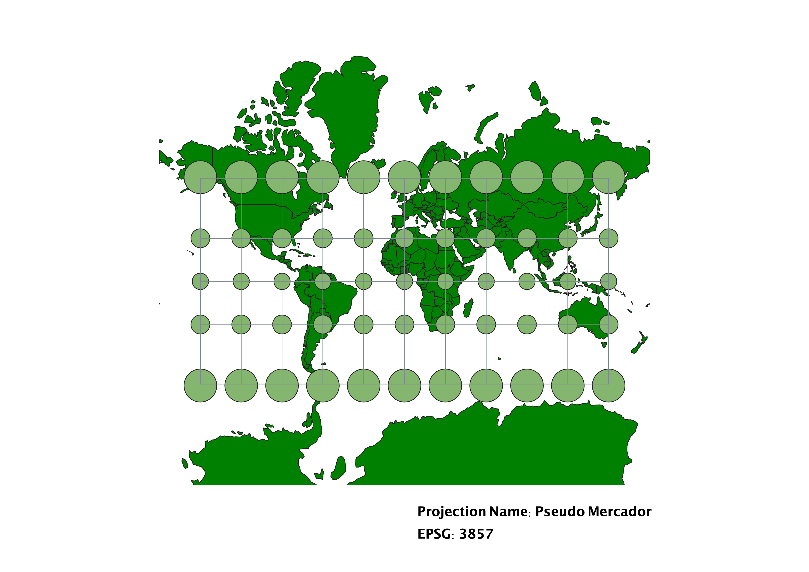
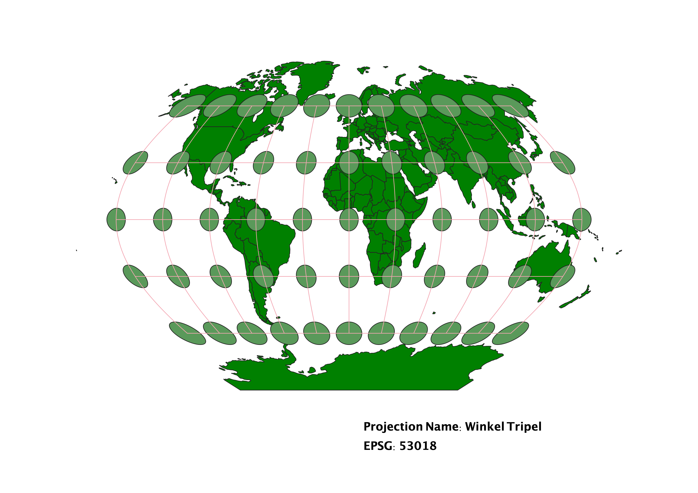
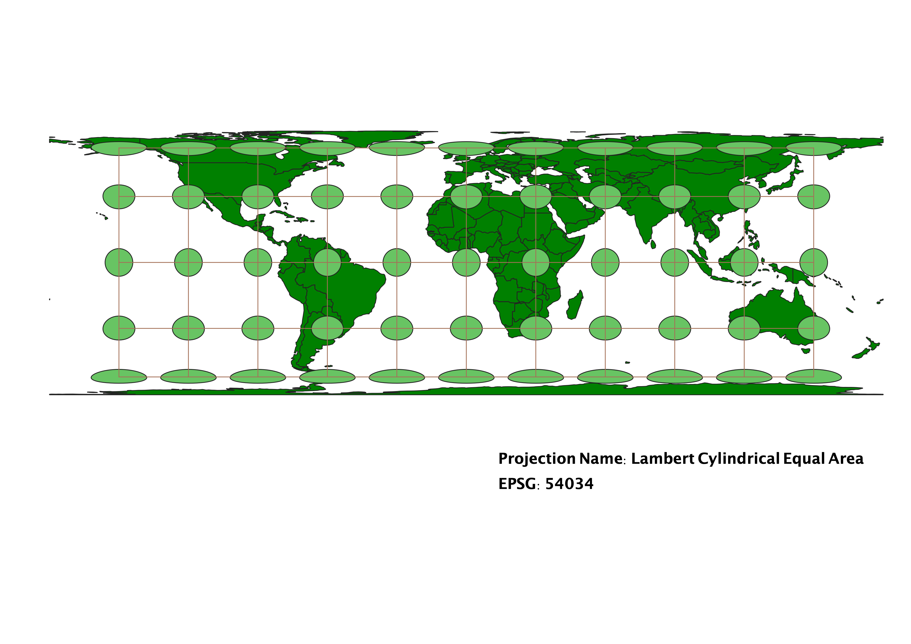
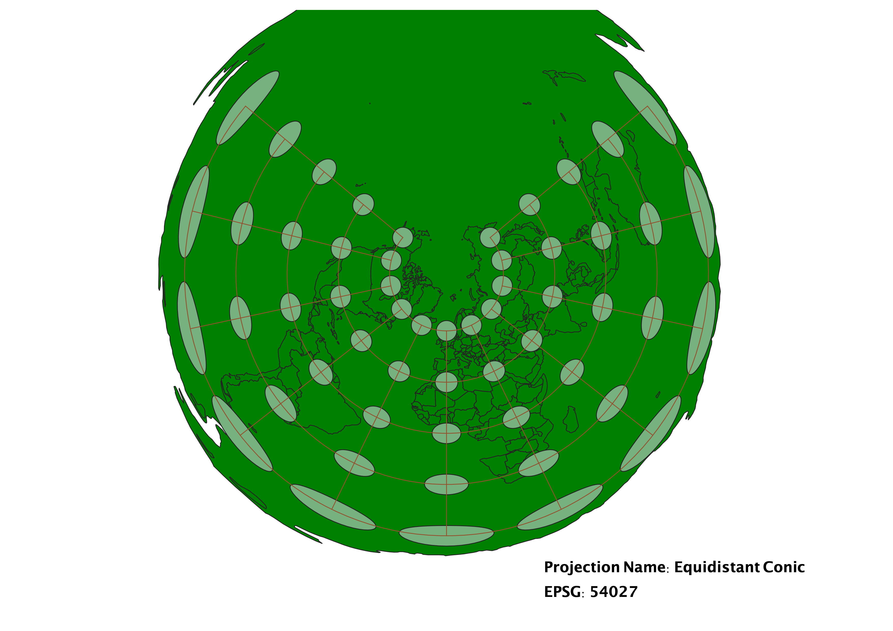
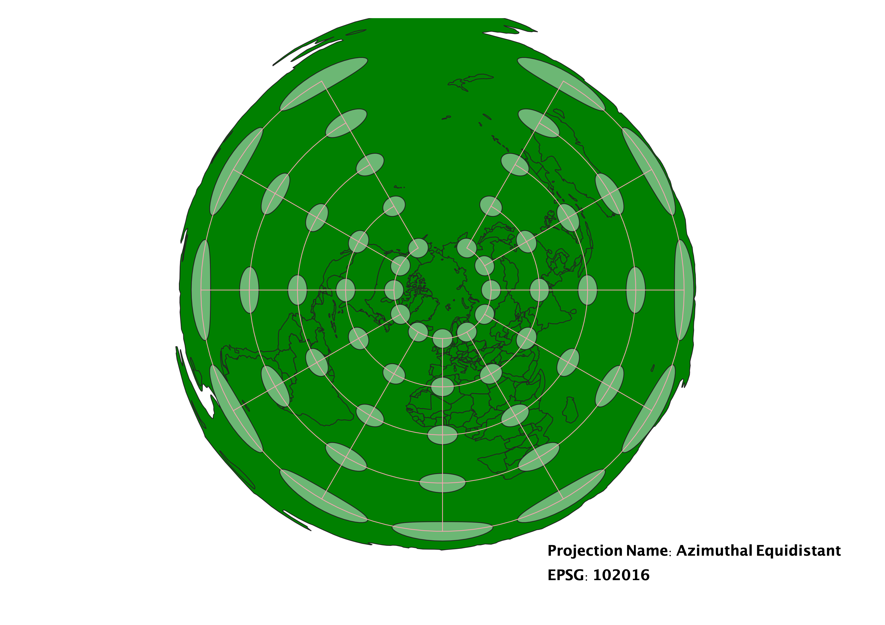
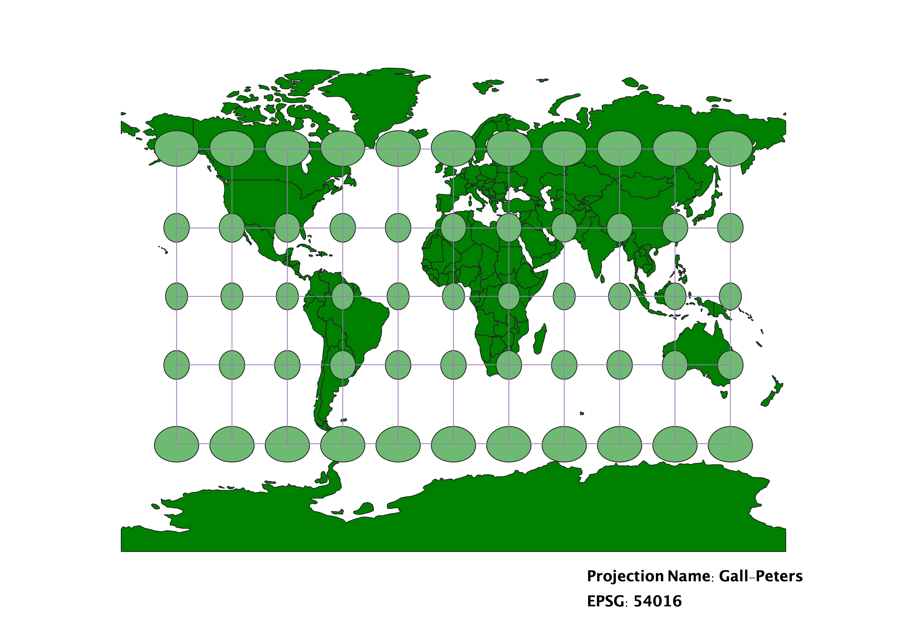
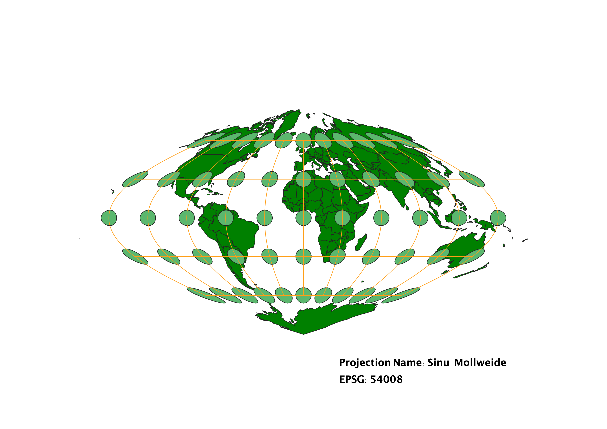

In this project I learned how to display images in different projections
Describe in your own words how you displayed the map in different projections using QGIS
In QGIS, I first opened the Globe Builder plug-in, and uploaded data from Natural Earth for the base layer. I
then used Indicatrix mapper, which shows latitude and longitude on my maps, as well as indicatrix circles, which
help illustrate the map distortions of different map projections. To change the projection, I changed the EPSG to
the six specified for the homework, and two of my own choices. On the projections, indicatrix circles change in area and/or shape to reflect shape and area distortions of the land on the map.
WGS84 Projection
In this projection, the larger, stretched out circles as you get closer to the poles indicate both distorted shape and area of the map as the absolute value of the longitude increases.

Aitoff Projection
In this projection, the circles appear to have roughly the same area, but the map shape is more distorted as you move away from 0,0.

Pseudo Mercator Projection
In this projection, there is no distortion of shape across the map. The circles on the latitude lines closest to the poles are distorted in area so the land in that area of the map appears larger than it is.

Winkel Tripel Projection
In this projection, both area and shape of the circles are slightly distorted.

Lambert Cylindrical Equal Area Projection
In this projection, as the name indicates, all circles are equal in area, but are extremely distorted at the north and south poles, implying that the land shape on the map is also distorted.

Equidistant Conic Projection
Because this is a conic projection, the map shape takes on a sort of semi circle. The circles keep their shape for the most part, except for the extreme distortion at the south pole of the map. Area here is also extremely enlargened. As the name implies, this projection accurately preserves distance on the map.

Azimuthal Equidistant Projection
This projection is extremely similar to the equidistant conic in that it accurately represents distances on the map. However, the longitudes on this projection are more spaced out, resulting in slightly more shape distortion.

Gall-Peters Projection
In this projection, there is slight distortion in shape, with the circles on the latitudes closet to the poles appearing horizontally stretched, and all of the other map circles appearing vertically stretched. The areas across the map appear to be very similar, except for those on the latitudes closet to the poles, the circles being greatly enlargened.

Sinu-Mollweide Projection
In this projection, the areas across the map appear to be somewhat preserved, but shape and area distortion are more intense at the poles, as well as moving away from the prime meridian.

Data used for this project
Download Natrual Earth 1:10m Cultural Vector